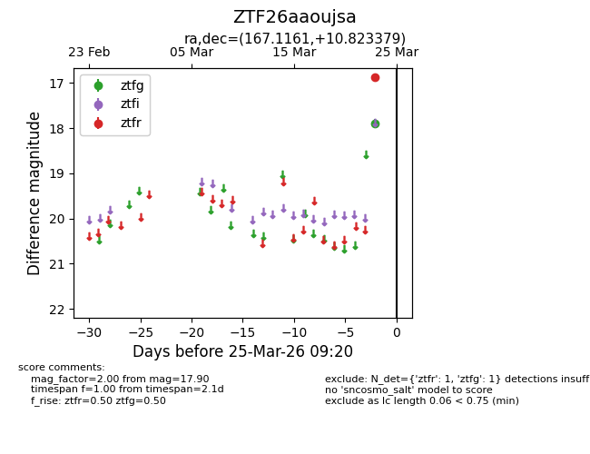
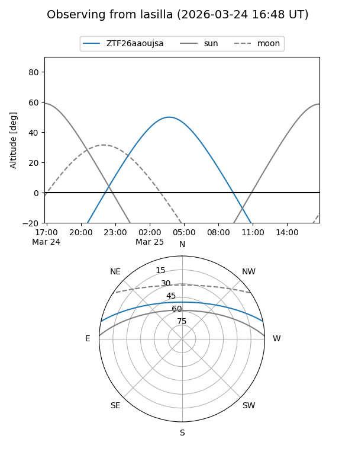
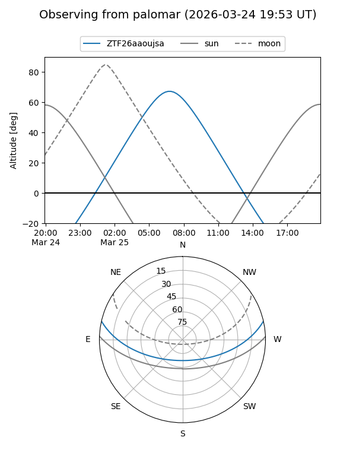

ZTF26aaoujsa
Target ZTF26aaoujsa at 2026-03-25 09:24
Aliases and brokers:
FINK: link
Lasair: link
ALeRCE: link
alt names
ZTF26aaoujsa (ztf,fink_ztf)
Coordinates:
equatorial (ra, dec) = 167.1161,+10.82338
equatorial (HMS+DMS) = 11:08:27.87,+10:49:24.17
galactic (l, b) = (241.9135,+60.81153)
Flags:
Photometry:
last ztfg=17.90, ztfr=16.87
1 ztfg, 1 ztfr detections
Lightcurve

Visibility


Additional plots